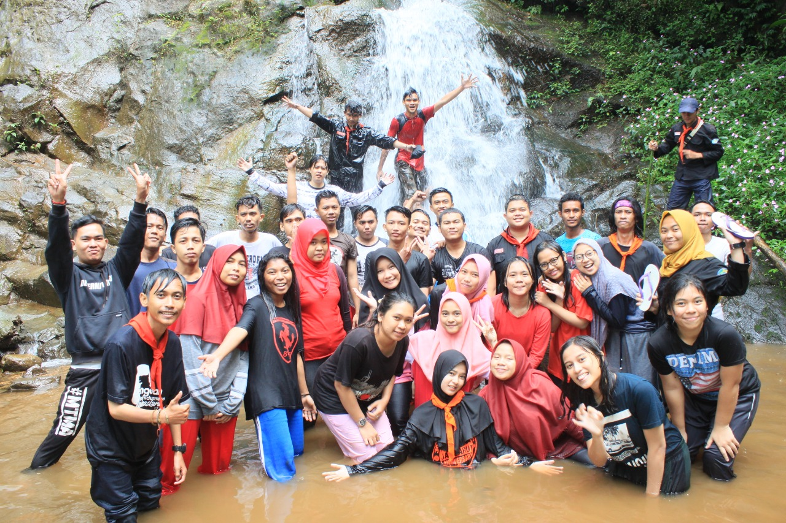
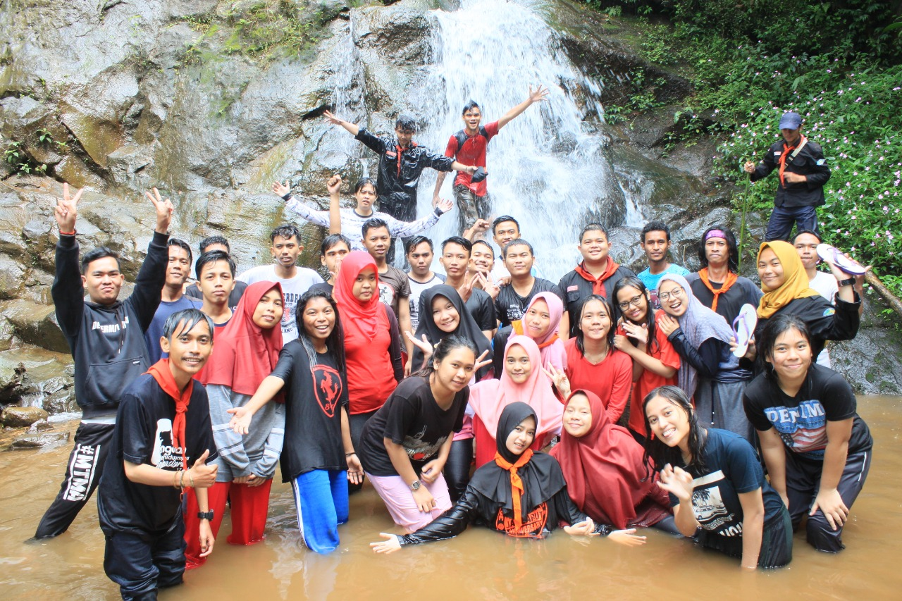

Kegiatan Mapares

 


Struktur Organisasi UKM Mapares
Muhammad bayu
Ketua UKM Mapares
Zulia Riza
Wakil Ketua UKM Mapares
Mutiara Nur ibrahim
Sekertaris UKM Mapares
Lihat informasi kegiatan mahasiswa yang lainnya